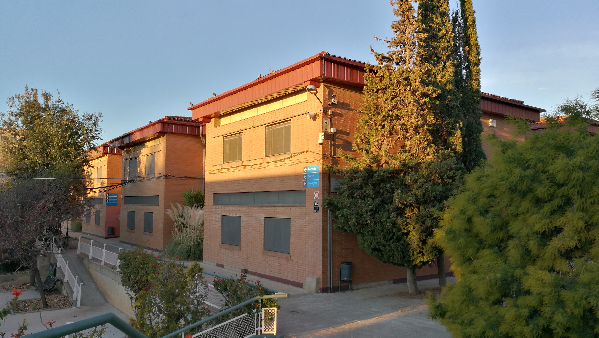

> Hola_mundo, soy
Joel Joan
Castillo Ramos
Estudiante de DAW 2º en Mataró (Institut Thos i Codina)
ConócemeStack Tecnológico
Me encanta programar y construir soluciones web utilizando tecnologías como HTML, CSS, JavaScript, Java y React.
Aprendizaje Continuo
Actualmente ampliando mis conocimientos en React, Node.js y Python, apoyándome en documentación como w3schools.com.
Foco y Dedicación
Mi gran meta para este curso es finalizar con éxito 2º de DAW y darlo todo para ganar el iFest.
Un Desarrollador Apasionado
Al Que Le Encanta Programar


Grado Superior DAW
¿Quién soy yo?
Mi nombre es Joel Joan Castillo Ramos, soy estudiante de Desarrollo de Aplicaciones Web (DAW) de segundo año en el instituto Thos i Codina de Mataró. Me gusta mucho programar y soy un apasionado de la tecnología.
"Another day another world" — No te preocupes si un proyecto no acaba de funcionar, mañana seguramente tendrás otra idea mejor.
Tecnologías en aprendizaje
| Tecnología | Nivel actual | Recurso |
|---|---|---|
| React | Principiante | Curso de React |
| Node.js | Principiante | Node.js Docs |
| Python | Principiante | Python España |
Snippet & Checklist
def sayHi(name):
return f"Hola, {name}!"
print(sayHi("Joel Joan"))Checklist de objetivos (Rama activa)
-
Configurar el entorno de desarrollo - Crear el perfil en Markdown y Web
- Entregarlo en el Moodle a tiempo
- Relajarse y ver una película
Favoritas
Aprendizaje
DAW
Ganar iFest